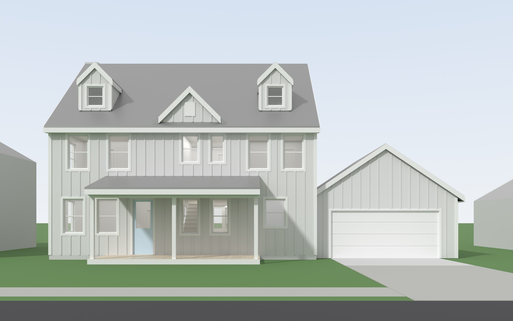
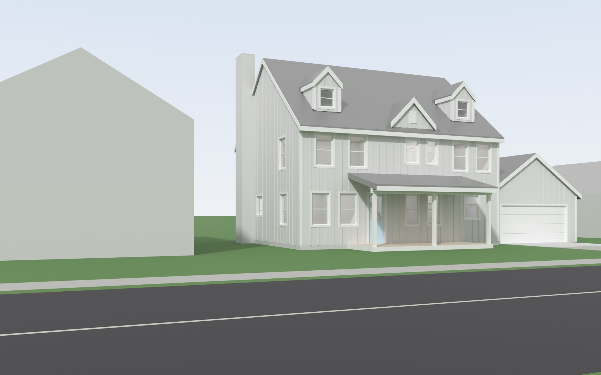
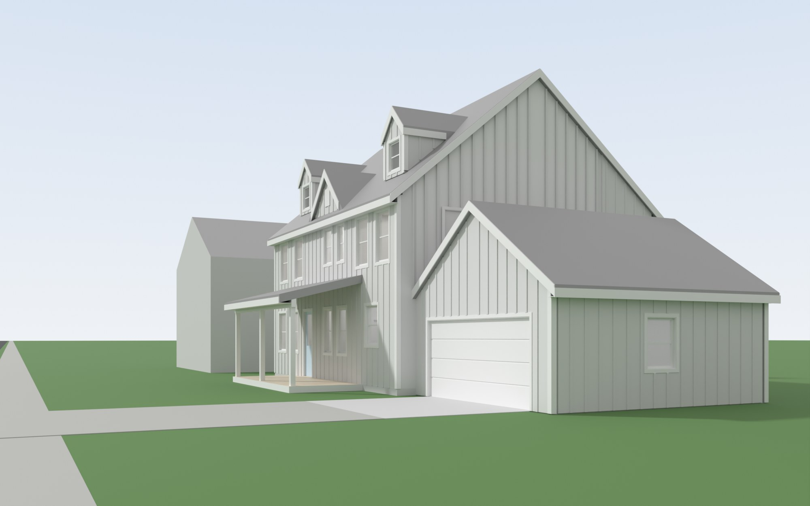
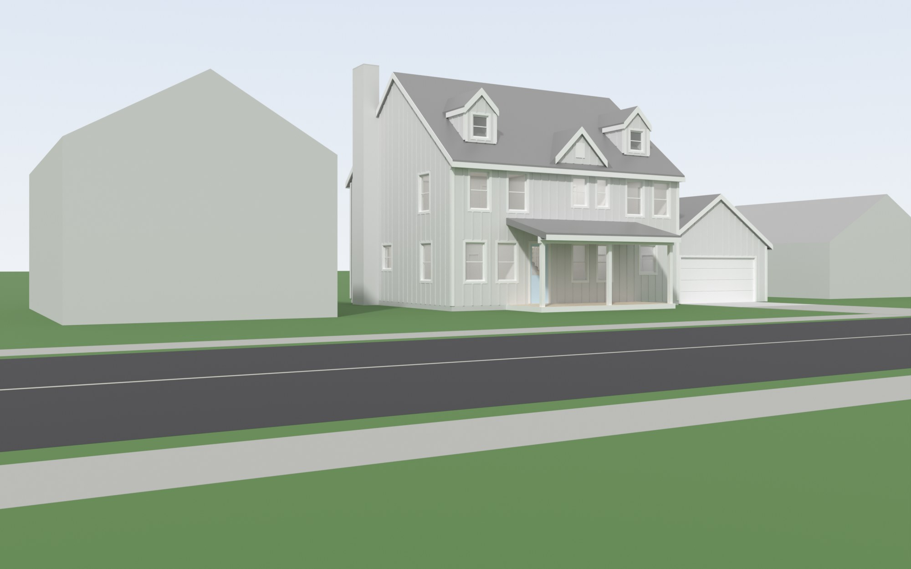
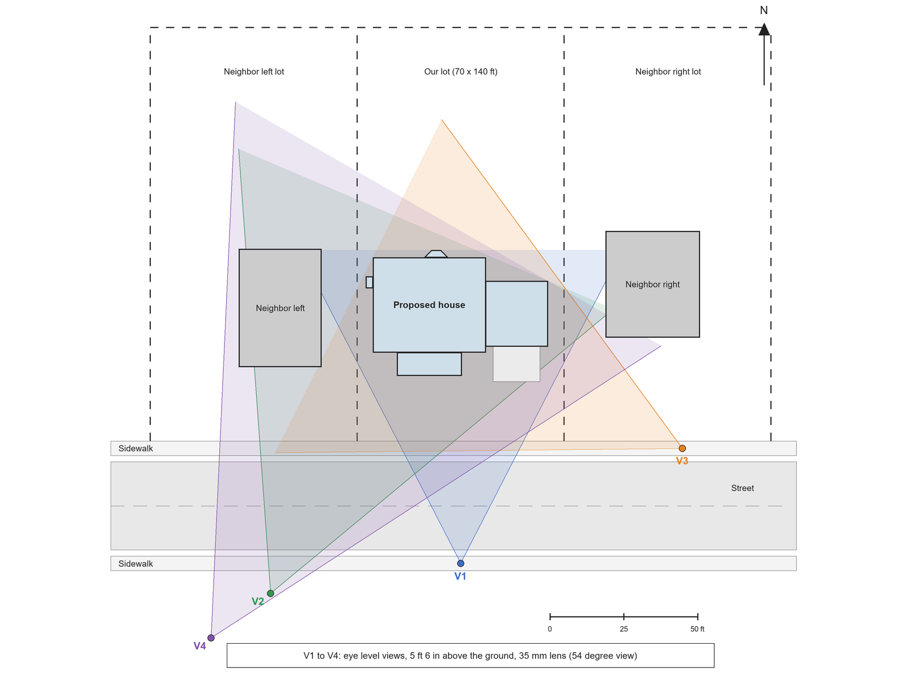

Street views for zoning and design review
For land use attorneys, developers and owners going before a board.
What it is
Views of a proposed building from the street, built from the plans. Every camera position and height is written down so the board and the neighbors can check them.
What you get
- Four to six views from standing eye height
- A map showing where each view was taken from
- A method sheet listing the camera positions, the lens and where each height came from
- The neighboring buildings shown as simple shapes, or in detail if their dimensions are supplied
- Files sized for exhibit boards and slides
How it works
- Send the plans and the site plan.
- I model the building and the lot from the drawings.
- I place cameras at standing eye height at the spots you choose.
- You get the views, the map and the method sheet for the hearing.
See a sample
Sample on a fictional lot, with the neighboring houses as placeholder shapes.






| View | Where the camera stands | Position (ft) | Eye height | Lens | Looking at |
|---|---|---|---|---|---|
| V1 | Opposite sidewalk, straight across from the house | x 35.0, y -41.5 | 5 ft 6 in | 35 mm (54 degree view) | House front, straight across |
| V2 | Lawn behind the opposite sidewalk, about 64 ft left of V1 | x -29.3, y -51.6 | 5 ft 6 in | 35 mm (54 degree view) | House front left corner (main body) |
| V3 | Our side of the street, on the sidewalk in front of the right neighbor | x 110.0, y -2.5 | 5 ft 6 in | 35 mm (54 degree view) | House center front, along the street |
| V4 | Lawn behind the opposite sidewalk, about 84 ft left of V1 | x -49.4, y -66.7 | 5 ft 6 in | 35 mm (54 degree view) | House and left neighbor |
Positions are in feet from the front left corner of the lot. Negative y is toward the street.
Views show the building as drawn and are not a shadow, traffic or code study.